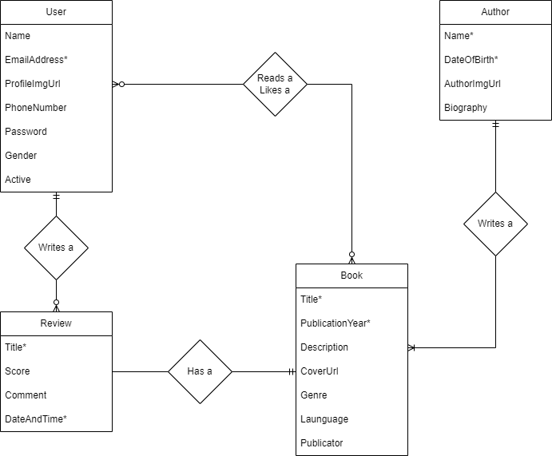

Clemens Stouten
Student_Nummer: 2211104
Casus: Boekenkastbeheer
De applicatie is bedoeld om gebruikers te helpen hun persoonlijke boekencollectie te beheren. Gebruikers kunnen boeken toevoegen, beheren en recensies schrijven. De applicatie biedt functionaliteit voor het filteren van boeken op genre, auteur of beoordeling en bevat een overzicht-detail structuur. Het doel is om een handige tool te bieden voor boekliefhebbers die hun collectie willen organiseren en delen.
Entity Relationship Diagram (ERD)
Functionele Requirements (FR)
| ID | FR (User Story) | Acceptatiecriteria | Prioriteit |
|---|---|---|---|
| FR-01 | Als gebruiker wil ik boeken kunnen toevoegen aan mijn collectie, zodanig dat ik mijn collectie kan beheren. | Een gebruiker kan een boek met titel, genre, publicatiejaar en auteur toevoegen. Het boek verschijnt in het overzicht. | Must-have |
| FR-02 | Als gebruiker wil ik een overzicht van mijn boeken zien, zodanig dat ik eenvoudig door mijn collectie kan navigeren. | Het overzicht toont een lijst met boeken met filters voor genre, auteur en beoordeling. | Must-have |
| FR-03 | Als gebruiker wil ik een auteur kunnen toevoegen, zodanig dat ik boeken aan die auteur kan koppelen. | Gebruikers kunnen een auteur toevoegen met naam, geboortedatum en nationaliteit. Het systeem valideert de input. | Must-have |